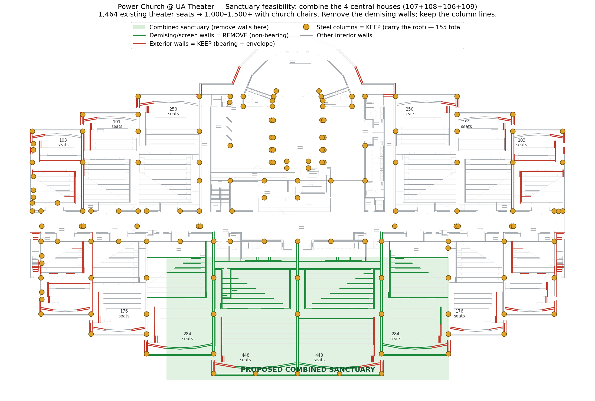
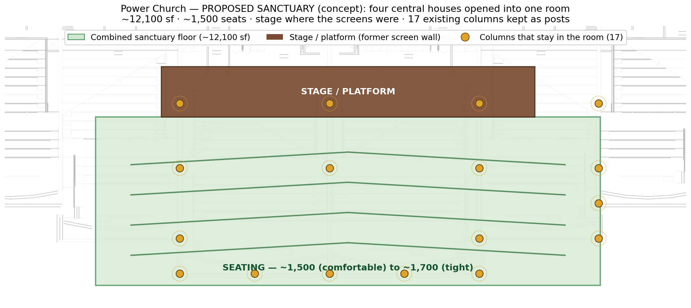
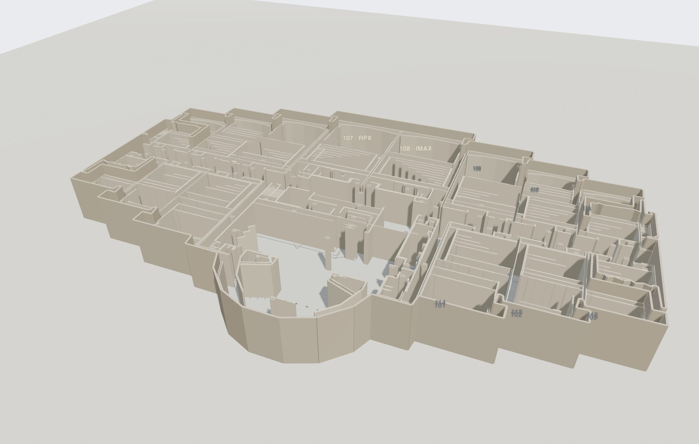
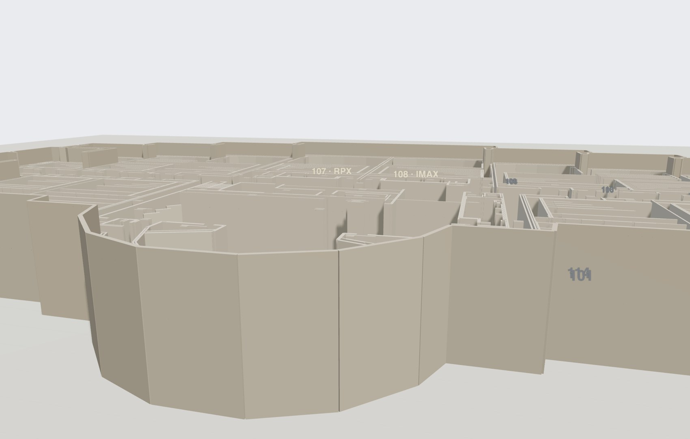
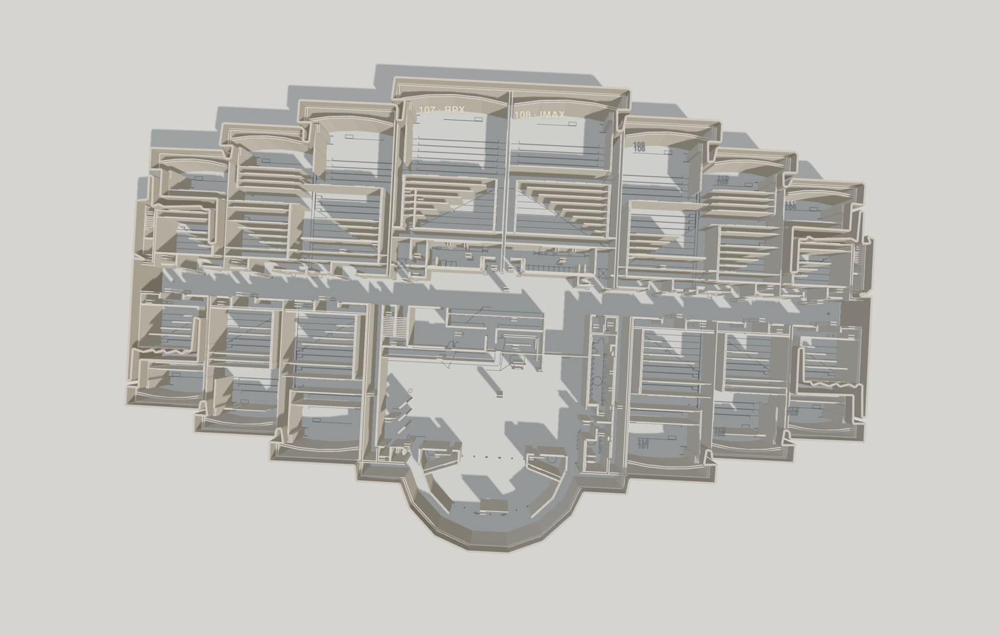

We're turning the former Amarillo Star multiplex into Power Church. Here's the building in 3D, what it can hold, and how we get there — built from the original architect drawings.
A former 14-screen theater. The expensive bones a church needs — a huge column-free room, parking, and the structure — already exist.
Yes. We combine the four central houses into one sanctuary by removing the walls between them — and the roof stays up, because it rests on the steel columns, not those walls.
| Combine these houses | Existing seats | As a church (chairs) |
|---|---|---|
| 107 + 108 (RPX + IMAX) | 896 | ~1,000–1,200 |
| 106 + 107 + 108 + 109 ★ recommended | 1,464 | ~1,500–1,900 |
| add 105 + 110 | 1,816 | up to ~2,200 |
The separation walls between the central houses. They're partitions, not structure — demolition under an intact roof, the lowest-cost kind.
The steel columns (they hold the roof), all exterior walls, and any bracing the engineer flags. A few columns remain in the room — normal for big churches.

Open the four central houses into one room. The stage goes where the screens were; ~12,100 sf of seating holds ~1,500. Seventeen existing columns stay in the room as posts — normal for a room this size.

The acoustic separation walls between houses 106-107-108-109, and the old screen walls inside that block. Pulled under an intact roof — the cheapest demolition there is.
The 17 steel columns (they hold the roof), every exterior wall, the roof itself, and any bracing the engineer flags.
Two very different numbers: taking the walls out is cheap. Finishing it into a worship space is the real investment.
| Scope (sanctuary, ~15,000 sf) | Planning range |
|---|---|
| Remove the walls (selective demo, shoring, haul-off) | $90K – $250K |
| Floor — keep terraced rake vs. level it | $100K – $500K |
| Stage / platform | $75K – $200K |
| HVAC re-zoned to one big room | $150K – $400K |
| Worship AV, sound, lighting, screens | $300K – $900K |
| Finishes — flooring, acoustics, ceilings, paint | $300K – $700K |
| Seating (~1,500 chairs) | $120K – $225K |
| Electrical, life-safety, ADA | $150K – $400K |
| Sanctuary all-in (incl. soft costs + contingency) | ~$1.5M – $3.5M |
This is the sanctuary only. The rest of the building — lobby/café, kids, classrooms, offices (~50,000 sf) — is separate and can be phased. Planning-level estimate (−30% / +50%); a contractor walk-through bid and a structural engineer's review set the real number.
Spin it, look inside, slide the roof and walls. Built to true scale from the original CAD.
Open the interactive 3D model →


Everything we build for this project lives here. Hand the 3D file to an architect; share this whole page with the committee.
{kind=link}
{kind=link}
{kind=link}